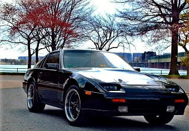
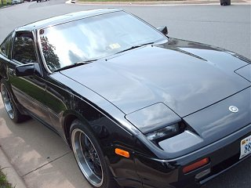
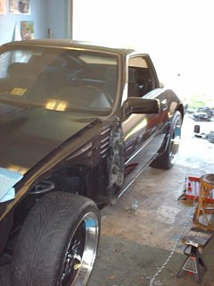

-
I have not seen these Juke 17 x 7 wheels 47 offset on a Z31 yet and have them sitting in the corner collecting dust. The tires are 215 / 55 R17. My suspension is currently stock but I am considering some KONI adjustable sport cartridges front and rear and possibly new springs. The rear will bolt directly to the car but sits too far in towards the body for my liking and will need some outward adjustment. The front rubs the strut tube and definitely will need some adjustment. I would like to have these as close to the factory offset as possible. Ultimately I would like to have some 17 inch cobra wheels but these are cost effective for now.
Thoughts or suggestions?
1986_Z31_and_Juke - Copy.jpg
1978 280Z - great fun!
1981 280ZX - more fun!!
1986 300ZX NA2T - Lots of fun! -
You're going to need at least a 27mm spacer to get a stock looking, sunken in wheel.
I'd say at minimum a 45mm spacer. IMO they'd look goofy with anything less due to their lack of concave or barrel lip. Honestly that's a pretty ridiculous sized spacer, you'd be better off finding a wheel with a more friendly offset. 0-25mm spacers are the most common, 16x7 +20mm offset is original fit.. so use that info if you choose to find some new wheels.
If you do get spacers, you need one with 66.2mm hub bore and a 5x114.5 bolt patternLast edited by 88sinZ; 08-13-2016, 02:07 PM. -
Thanks very much - Thats the kind of feedback I needed. I had sort of a feeling those wheels would present a problem with that much of an offset.
So now on to the next question. Since I like the mustang cobra wheels I have seen on other vehicles so much do you have any information on what offset/size those are?
I know thats a sort of generic question to ask but I am just starting to learn what to ask.1978 280Z - great fun!
1981 280ZX - more fun!!
1986 300ZX NA2T - Lots of fun! -
This is a very useful Z31 wheel page http://www.thezenthusiast.com/wheelshow.html
I ran 18x9 +20 Bullitts on 245/45's and they just cleared the front lower spring perch. Here's the new setup for a 18x8.5F 18x9.5R setup https://z31performance.com/forum/z31…1185-reference  Last edited by 88sinZ; 08-13-2016, 03:03 PM. -
I have been to that wheelshow page for 17 inch wheels am really interested in the wheels on the cars labeled Naka88ss, wheels Mustang Cobra wheel spec(s): F: 17x8 R: 17x8 . Z88NA wheels Ford Mustang Cobra, wheel spec(s): F/R 17x8 e30 [Direct fit] and Matt89 wheel(s): '03 Cobra. Those are not 86 models but I am hoping to find wheels of that style. These seem to be direct fits. Another last sort of newbie question before I search for wheels like that, will those ford mustang wheels bolt pattern match up to the 300ZX stock or is some other adapter needed?
Thanks a lot!1978 280Z - great fun!
1981 280ZX - more fun!!
1986 300ZX NA2T - Lots of fun! -
After doing further research I have answered my own questions. Those cobra wheels are available in several places across the web. Google is your friend…I also saw most of the cars I previously mentioned in other posts on this site which contained answers to what I was asking. I just have to look further before asking so many questions.1978 280Z - great fun!
1981 280ZX - more fun!!
1986 300ZX NA2T - Lots of fun! -
You will want 17x9 + 24 sizing. You will need a 10mm spacer to clear the strut tubes in the front. Honestly I would probably get 10 to 15mm for all around the car for better fitment.
Tires look at 245/45/17 or 255/40/17. With stock ride height you probably would benefit from a slightly taller tire with the 245/45.
I run a similar setup on my 86; 17x9 + 24 with 10mm spacer in all 4 corners with 245/45 tires riding on tokico HPs and Eibach springs.86na - BlueZ
Shiro #366 - Kouki Monster
85t - Mr Tickles -
Thanks a lot for the reply! I have a set of 215/55/17 goodyear eagles from the Juke with 10k miles on them.
Do you think those might be useable?
On another note - I am going to get the B&M short throw shifter. Not even going to second guess price on that after all the comments
I've seen on this site saying that is a great shifter.
Lastly(for now anyway) I am considering KONI adjustable Sport shocks and KONI externally adjustable struts from Tire Rack.
Does anyone have any knowledge or opinion on the suspension or shifter?
Thanks!!1978 280Z - great fun!
1981 280ZX - more fun!!
1986 300ZX NA2T - Lots of fun! -
I can't say anything on the B&M shifter. But if you're looking at Konis, go for it. I've had a set of yellows on my Z31 for a few years now, recently with refreshed front components, and they make quite the difference. Koni also has their annual summer sale going on now, so you'll get a 20% discount if you order them soon.Originally posted by rcasey56 View Post
'86 300ZXT GLL
'78 Datsun 280Z BP
'11 Saab 9-3 Aero XWD -
Thanks for the info on the KONI's pace!1978 280Z - great fun!
1981 280ZX - more fun!!
1986 300ZX NA2T - Lots of fun!

Copyright © 2006–. All rights reserved. Privacy Policy